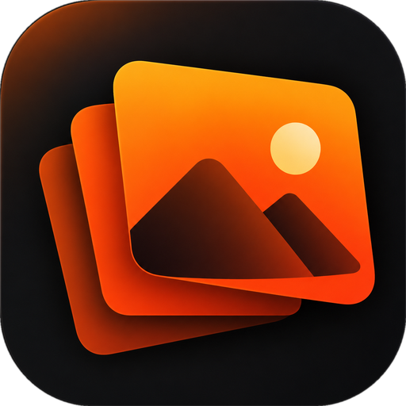
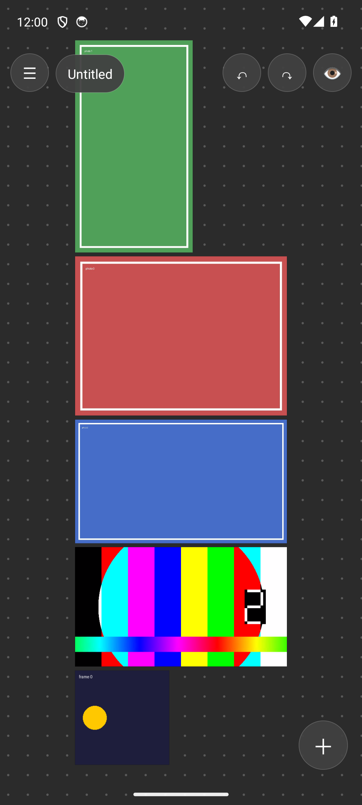
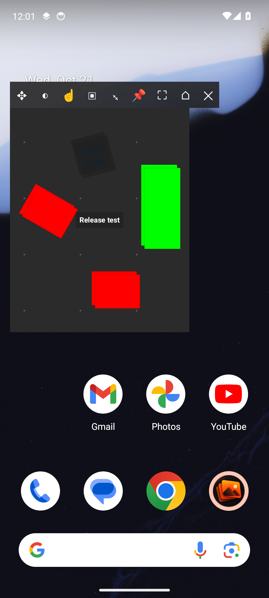
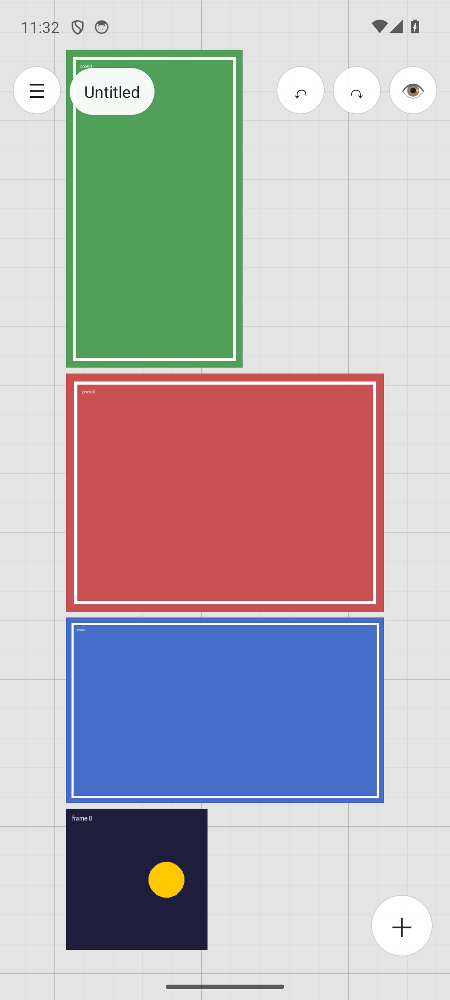
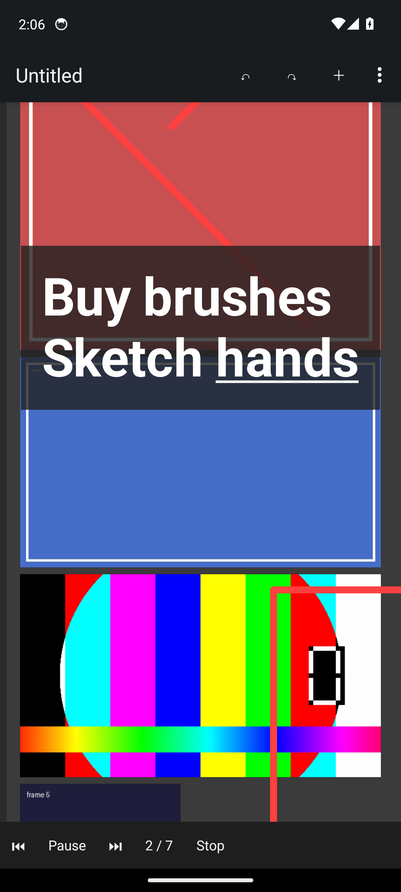

DroRefDroRef is a free, open-source reference board for Android. Collect images on an infinite canvas, arrange them, and float them over your drawing app. It opens and saves PureRef .pur files.
No ads, no account, no tracking. MIT licensed.


Built for artists who draw on a tablet or phone.
Add images and videos from the gallery, paste them, share to DroRef, paste a link, or drag and drop from another app in split screen.
Move, scale and rotate with your fingers. Crop, flip, align, distribute, stack, normalize sizes, group and parent.
Float the board over any app, or only over one. Set opacity, make it transparent to touch for tracing, or hide the background.
Play, pause, step frames, scrub and change speed. Loop a video between two points and grab any frame as an image.
Color picker with RGB, HSV and HEX, grayscale canvas, slideshow, and a focus mode that hides all the UI.
Rich-text notes with checklists and links, drawing tools with arrows, and comments on images.
Dark, light and glass themes. Dot, grid or plain backgrounds.


Open a .pur from PureRef, edit it on your phone, save it back. PureRef opens it on your computer. From PureRef 2, use Save as → Legacy PureRef scene first.
DroRef is an independent app, not affiliated with PureRef or Idyllic Pixel. On PC, use the original: pureref.com
One person builds and maintains DroRef, and it will stay free. If it helps your work, a coffee helps keep it going.
☕ Buy me a coffee